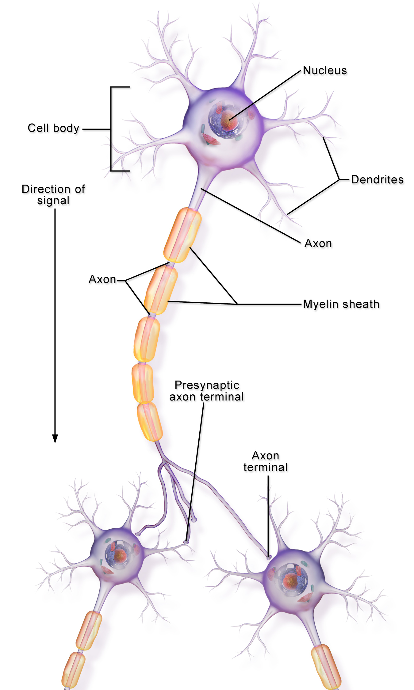

Interneurons
In the past two weeks, I’ve focused on developing the most common class of neurons in the brain - the interneurons. These neurons have thousands of subtypes and functions, based on their shape and structure. However, they all have the below common design with variations derived from it. These variations are created during neurogenesis, the lifelong creation and recycling of neurons, and reside in different regions of the brain.
Interneurons and its connection to ERUs
Interneuron Labelled Diagram

Comparison
| Brain cell component | Corresponding ERU component |
|---|---|
| Synapse | Neurotransmitter release - Vesicles carrying specific neurotransmitters arrive at the mouth of the ERU |
| Receptor | Mouth of the ERU - Based on the code for each neurotransmitter, perform a biologically-grounded effect on the ERU Mouth / receptor |
| Dendrites | Mouth of the ERU - Waveform dynamics, scaling and aggregation of neurotransmitter effects simulate dendrite ion channels |
| Soma / Nucleus | As genetics and metabolism aren’t a part of ERS at this point, a separate nucleus is absent from the ERU design |
| Axon Terminal | Neurotransmitter cores - Different types of cores are placed by the motivation targets at the twists of the ERU’s double helix, during neurogenesis |
Algorithms / Development
Building the Environmental Response System (ERS)
Biophysical Multi-Compartment Interneuron with Hodgkin-Huxley channels implementation v1- For each time instant
- For each receptor
- Apply presynaptic releases instantly to synapses
- Evolve Soma, Dendrite, Na+ / K+ variables according to Hodgkin-Huxley dynamics (inherit waveform dynamics from Beads design)
- Record soma voltage for postsynaptic current (through the Axon)
- For each receptor
- Compute Mg2+ blocking factor B(V) in the range [0,1]
- If voltage is negative, block stimulus from synapse
- If voltage is positive, amplify synapse’s stimulus. The placement of this receptor is key for the “aha” moments in your brain. For example, if placed at the end of the “aaaa” “ppp” “ellll” route from the auditory cortex, it pushes for further thought, as the word ‘apple’ is detected and focus is concentrated on this neuron. This behaviour is central to feeling / experience, memory and logic, and is the essence of the ERS build
Development Activity - https://github.com/akhil-reddy/beads/graphs/commit-activity
Building the interneuron - https://github.com/akhil-reddy/beads/blob/main/beads/core/eru/hub/commons.py
Please note that some code (class templates, function comments, etc) is AI generated, so that I spend more of my productive time thinking and designing. However, I cross-verify each block of generated code with its corresponding design choice before moving ahead.
Next Steps
Building the Environmental Response System (ERS)
- Refining the visual cortex
- Building the ERUs
- Neurotransmitters - Fed by vision’s bipolar and amacrine cells, for example, to act on contrasting and/or temporal stimulus
- Focus - Building focus and its supporting mechanisms (of which acetylcholine is one)
Deployment
- Overlaying video frames onto the retina, including code optimization for channel processing
- Overlaying audio clips onto the cochlea, including optimization for wave segment processing
- Parallelization / streaming of cellular events via Flink or equivalent